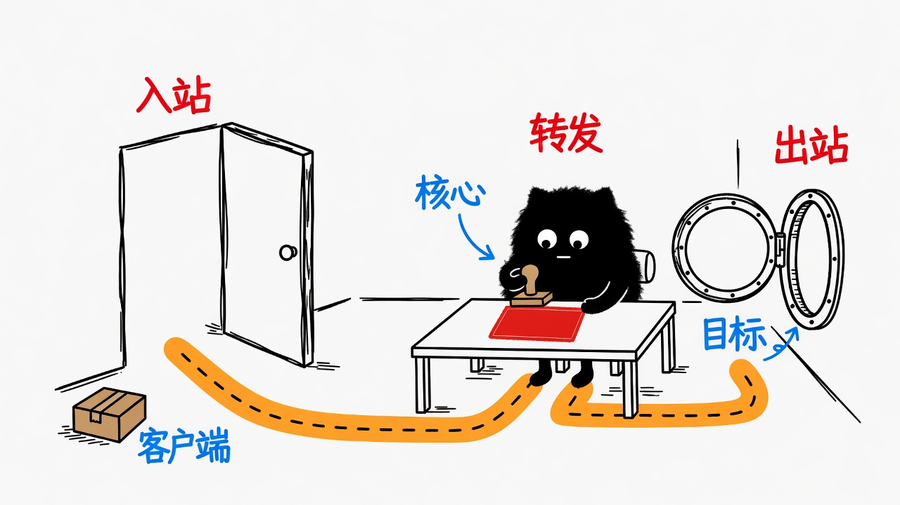
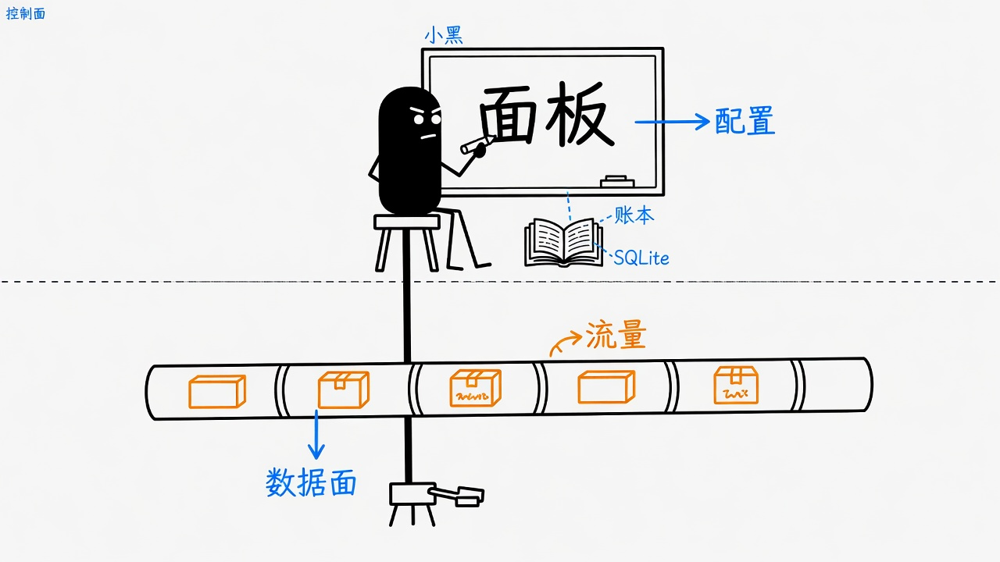
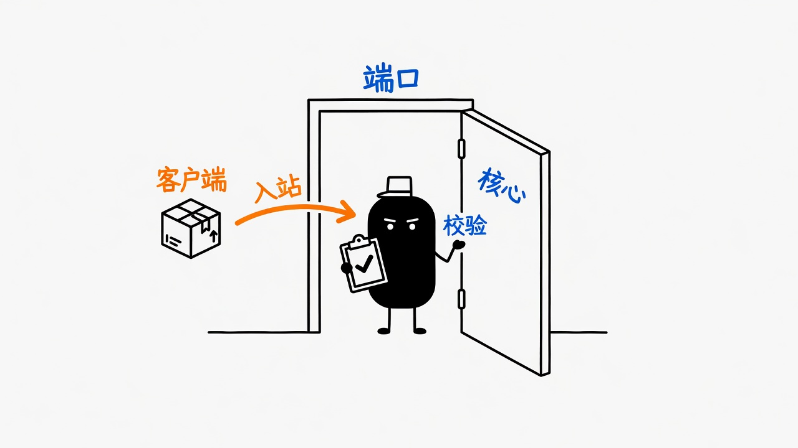
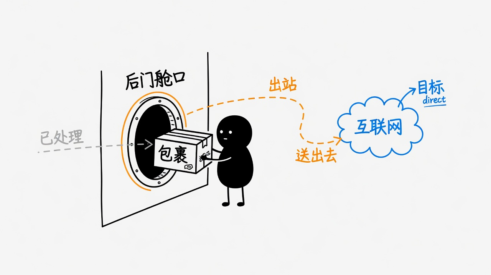
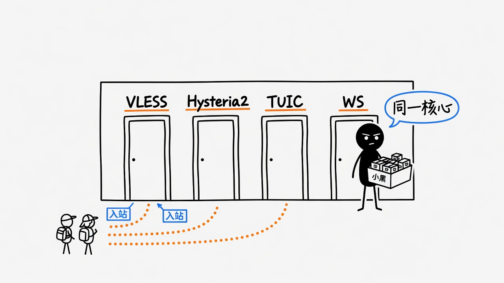

给 sing-box
配一套带账本的 UI
s-ui 是单进程的代理管理面板：控制面负责配置与订阅，数据面内嵌 sing-box 真正接流量。本文记录 racknerd 实例探查结果，并交互解释 inbound / outbound。
流量只走一条链
点选节点，看每一步在系统里对应什么。
客户端
v2rayA / sing-box / 手机客户端按 URI 连入。你本机的 SOCKS 127.0.0.1:2080 是本地客户端的 inbound，再作为 client 去敲远程门。

运行状态
探查时间 2026-07-15 · SSH Host racknerd · 配置已脱敏
监听端口
| 端口 | 协议 | 用途 |
|---|---|---|
2095/tcp | HTTP | 面板 /app/ |
2096/tcp | HTTP | 订阅 /sub/ |
443/tcp | VLESS+WS+TLS | vless-cf-ws |
8444/tcp | VLESS+Reality | vless-8444 |
8444/udp | TUIC | tuic-8444 |
20146/tcp | VLESS+TLS | vless-20146 |
47096/udp | Hysteria2 | hysteria2-47096 |
16699/udp | TUIC | tuic-16699 |
近 24h 日志粗计数：inbound ~1.2e4 · direct out ~6.5e3 · ERROR ~1.5e3（含扫描噪声）。活跃主路径：
vless-cf-ws → outbound/direct。
架构
单进程 /usr/local/s-ui/sui · WorkingDirectory /usr/local/s-ui/
控制面
HTTP 面板、订阅、用户 / 入站 / TLS / 统计。状态写入 SQLite s-ui.db。
数据面
内嵌 sing-box 监听真实端口并转发。没有独立 sing-box.service。

systemd（结构）
[Unit]
Description=s-ui Service
After=network.target
Wants=network.target
[Service]
Type=simple
WorkingDirectory=/usr/local/s-ui/
ExecStart=/usr/local/s-ui/sui
Restart=on-failure
RestartSec=10s
[Install]
WantedBy=multi-user.targetSQLite 表角色
| 表 | 角色 |
|---|---|
settings | 面板端口、路径、路由 JSON、版本 KV |
inbounds | 入站 type/tag/tls_id/options/out_json |
outbounds | 出站（当前仅 direct） |
tls | 命名 TLS / Reality 配置 |
clients | 用户、绑定 inbounds、流量 |
stats | 流量统计桶 |
users | 面板管理员 |
路由骨架（脱敏）
{
"log": { "level": "info" },
"dns": { "servers": [], "rules": [] },
"route": {
"rules": [
{ "action": "sniff" },
{ "protocol": ["dns"], "action": "hijack-dns" }
]
},
"experimental": {}
}先 sniff，DNS 走 hijack-dns；业务出站落到 direct。
Inbounds 与 Outbounds
先建立直觉，再记协议细节。
接住客户端
服务器 listen 地址:端口，规定协议与 TLS，校验用户。
- 绑定 listen / port
- 协议：VLESS / TUIC / Hysteria2…
- TLS / Reality / WebSocket
- 客户端 URI 描述「怎么敲门」
送向目标
核心处理完后 再往哪走：直连，或跳下一跳代理。
direct：本机出网（本实例）block：丢弃- 链式：再出到另一代理
- 出口 IP 主要由 outbound 决定


自测
cf.<domain>:443 在拓扑里属于？本机 Inbounds
用协议过滤卡片。客户端侧 server 在订阅里可能指向 RELAY / ORIGIN / CF 域名。
| tag | type | port | TLS | 客户端入口（脱敏） |
|---|---|---|---|---|
vless-20146 | vless | 20146 | tls 自签 | RELAY:20146 |
hysteria2-47096 | hysteria2 | 47096/udp | tls | RELAY:47096 |
tuic-16699 | tuic | 16699/udp | tls | RELAY:16699 |
vless-8444 | vless | 8444 | reality | RELAY/ORIGIN:8444 |
tuic-8444 | tuic | 8444/udp | tls | RELAY:8444 |
vless-cf-ws | vless | 443 | tls-cf · ALPN http/1.1 · WS /ws | cf.<domain>:443 |
direct —— 本节点即出口，不做链式转发。
Client 示例用户绑定几乎全部 inbounds；流量量级探查时 down ~298GB / up ~8GB。

路径拓扑
切换路径，观察节点如何点亮。
CF 路径踩坑清单
- 橙云只适合 HTTP(S)/WS 兼容端口；Reality / 纯 UDP 不过 CF。
- Origin ALPN 只能 http/1.1，否则 WS Upgrade 失败。
- SSL 模式用 Full（自签可过）；Strict / Flexible 易 526 / 521。
- 订阅里 server 可能是 origin IP，客户端需改为
cf.<domain>。
运维速查
命令已脱敏 · 点击复制
# 状态
ssh racknerd 'systemctl status s-ui --no-pager'
# 日志
ssh racknerd 'journalctl -u s-ui -f'
# 端口
ssh racknerd 'ss -tulnp | grep sui'
# 备份 DB
ssh racknerd '/usr/local/s-ui/sui backup'
# 回滚二进制（示例）
# systemctl stop s-ui && cp /usr/local/s-ui/sui.old /usr/local/s-ui/sui && systemctl start s-ui升级：停服 → 换二进制 → 启服。DB 与 unit 通常可保留。v1.4.2+ 含 SQLite 连接泄漏修复。
脱敏约定
学习文档与 git 中禁止出现
身份与密钥
面板密码、session secret、UUID、token、TLS 私钥、Reality key/sid
基础设施
精确公网 IP（用 ORIGIN / RELAY / <IP>）、Cloudflare API Token